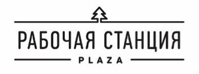

DreamCatcher
Dreamcatcher - это масштабный обучающий проект, раскрывающий мир осознанных сновидений. Обучение будет проходить в онлайне и в формате живых встреч и длится каждый месяц.
Осознанные сновидения (Осы) - это сны в которых мы даем себе отчет, понимаем, что спим и можем совершать любые действия по своему желанию. Это не мистика и не фантастика. Сновидения доступны всем и каждому, а научиться этому довольно просто.
Еще до появления Вконтакте они были закрытым сообществом и делились достижениями только в своих кругах. За годы работы набралось немало материалов о методах тренировки ОС, а с новой волной интереса к ОС в России, Хакеры Сновидений решили поделиться своими знаниями со всеми желающими.
Раз в месяц набираются группы, они делятся на категории согласно и опыту, получают задания и публикуют онлайн отчеты. 300 человек в одном наборе.
Открытие события сопровождается оффлайн встречей сообщества и подписчиков в Санкт-Петербурге и Москве.
Наш проект создан для молодых, самодостаточных людей: предпринимателей и специалистов в возрасте 18-35 лет. Их особенность — избирательность в массмедиа контенте и их внимание к сервису можно привлечь через профильные мероприятия, сообщества и блогеров.
С нашим проектом уже знакомы более 200 тысяч человек Мы привлекли 4 выдающихся эксперта в области Осознанных снов Мы презентуем себя в самой уютной Рабочей Станции Москвы, площадь которой 800 м² Нас освещает более 20 СМИ
Первый этап.
"Настройка Сновидений"
На этом этапе вы познакомитесь с миром Сновидца. Изучите терминологию, узнаете обо всех плюсах и минусах Осознанных Сновидений. Зададите вопросы волнующие вас и подготовитесь к практике.
Втоой этап.
"Ловец снов"
На втором этапе вы приступите непосредственно к практике. Вам будут даваться техники для осознания во сне. Так же вы узнаете, как не "выпасть" из осознанного сна, как правильно вести себя в мире снов и практическую сторону ОСов. Задания будут выкладываться в группе. Здесь же вы будете оставлять комментарии о своих успехах и задавать возникшие у вас вопросы. В практикуме так же будут проводится индивидуальные занятия с каждым участником (по желанию участников).
В группе действует "Программа+" Что это означает? Для преуспевающих участников будут даваться индивидуальные задания (по желанию практикующего) в группе или же в частном порядке (по желанию практикующего).
Третий этап. "Выпускник".
Завершающий этап
Подведение итогов практикума. Обсуждение техник, ответы на вопросы. Так же на этом этапе вам будут даны индивидуальные рекомендации для дальнейшей работы. Прохождение данного практикума не завершает вашего путешествия в мир Осознанных Сновидений. Это не фантастическая книжка, прочитав которую, вы закроете и уберёте пылиться на полку.
Благодаря нашему проекту вы познакомитесь с миром Осознанных Снов и научитесь контролировать свое состояние, когда спите.
Игорь Лосев
занимается практиками с детства. Ещё с ранних лет он начал осознавать важность снов в жизни и понимать, что в неприятных снах находиться долго просто невозможно. У Игоря была железная мотивация просыпаться безболезненно для собственной психики. Тогда он начал активно изучать практику осознанных сновидений, читал книги, разрабатывал собственную стратегию. С 2007 года Игорь начал проводить исследования и вести практикумы. С 2015 основал Санкт-Петербургскую школу осознанных сновидений.
Мария Егорова
опыт осознанных Сновидений и ВТО имеет с самого детства. В более сознательном возрасте начала исследовательскую работу по изучению снов в кругу своих друзей. Позже познакомилась с группами Хакеры Сновидений и NemaN, где продолжила свою практику. Первые практикумы начала вести в 2011 году. Мария является организатором международного ежегодного фестиваля «Хакеры Сновидений». На данный момент она сделала упор на научное изучение феномена осознанных сновидений. Маша не ограничивает себя в интересах, и помимо всего занимается туризмом уже 18 лет.
Кит Фрост
имеет опыт практики сновидения от рождения. Участвовал в проектах первого и второго поколения Хакеров сновидений. На данный момент Кит Форст - представитель Неман-Европа.
Luciding - уникальный стартап, получивший инвестиции со всего мира, который занимается осмыслением и разработкой осознанных сновидений с научной точки зрения. Проект существует уже два года и позволяет входить в Осознанный сон каждую ночь, при помощи устройства LucidCatcher. Вы просто засыпаете с устройством и во время фазы быстрого сна осознаете, что вы спите. Далее перед вами открываются безграничные возможности по управлению сном. Все ваши мечты могут реализоваться во время такого погружения. Мы предоставляем другую реальность. Одну для каждого.
Здоровье Mail.ru - справочно-информационый проект о медицине и здоровье
«Рабочая станция: Plaza» - площадка, которая позволяет проводить рабочие часы в уюте и комфорте. Здесь есть переговорные комнаты, безлимитный интернет, оборудованная кухня и даже капсульный отель.
Осознанные сновидения (фаза, сны, астрал, ВТП), 70 000 участников
https://vk.com/clubos
Выход из тела Астрал Осознанные сновидения Фаза, 30 000 участников
https://vk.com/blogaing
Гоша — Осознанные Сновидения, Сталкинг, Выход Из Тела, ВТП, 15 000 участников
https://vk.com/neyoga
Осознанные сновидения выход из тела фаза астрал, 15 000 участников
https://vk.com/aingnsk
Куратор проекта:
Алексей ab@luciding.com, +7 (909) 952-86-58
Пространство:
"Рабочая станция Plazaул. Бутырская, 62, Москва